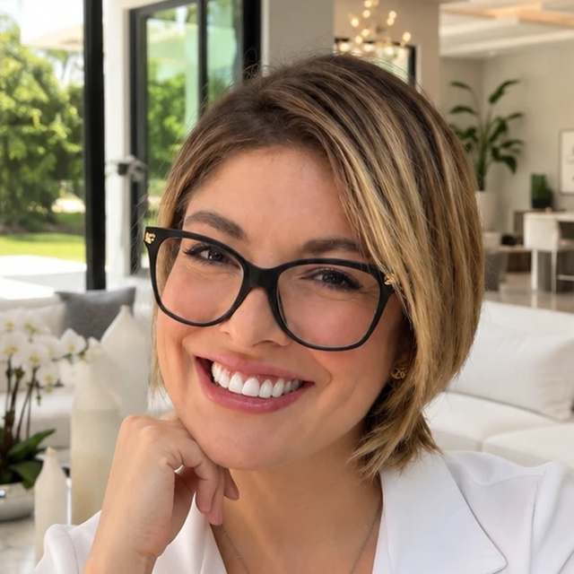

🌎Me llamo Laly Brickler.
Orgullosamente tengo dos nacionalidades, costarricense y estadounidense. De padre alemán y madre tica. Yo nací y crecí en otro país. Obtuve muchas ventajas de tener dos culturas distintas; he conocido diferentes creencias y diferentes formas de desarrollo humano.
🎓Después de mis estudios escolares y de colegio empecé en la Universidad en Wisconsin. Sin embargo, decidí venir a vivir a Costa Rica acompañando a mi madre, donde continué con la carrera de medicina en la universidad.
🌿Una vez que me gradué de medicina, hice mi servicio social en Monteverde. Este año fue una experiencia hermosa, con la naturaleza y la calidad humana de los vecinos de Monteverde.
🏥Posteriormente entré como primer promedio a mi especialidad médica en Ginecología y Obstetricia en el Hospital San Juan de Dios con la Universidad de Costa Rica. Aquí tuve una extensa formación en mi especialidad. Una vez graduada, seguí en la CCSS.
✨En este momento decidí no solo estar en el sector público, sino también extenderme al sector privado. Aquí logré estar en todos los hospitales privados y, hasta este momento, sigo en el sector privado en el Hospital CIMA, donde llevo más de 6 años. En esta etapa logré hacer varios cursos, entre ellos estética ginecológica y terapia de reemplazo hormonal.
💗Soy de mente abierta y fielmente siento que cada mujer merece un trato humano y respetuoso, independientemente de cuáles sean sus objetivos y/o metas de vida. Me mantengo al día con mi especialidad, con nuevos conocimientos mediante estudio continuo que me permite estar actualizada. Brindo manejos eficaces y dirigidos a la expectativa de mi paciente en todas las etapas de su vida.
🔬Desde estudiante universitaria la Ginecología y Obstetricia me conmovió, me abrió curiosidad, me motivó; simplemente me encantó la especialidad y sus múltiples ramas, tanto clínicas como quirúrgicas. Lo intrigante de la endocrinología y la fisiología de la mujer. Yo, siendo mujer, me siento muy capaz de relacionarme con mis pacientes de todas las edades.
🐶En mi tiempo libre me gusta caminar con mis mascotas; amo los animales, tengo perros y un gato. Me gusta hacer ejercicio con mi propio peso. Me gusta leer, aunque sea a lo antiguo, con libros físicos. Me gusta aprender sobre inteligencia artificial, algo que no pensé que me iba a gustar, pero cuando empecé a aprender un poco, me encantó.
🎶Me encanta la música de todo tipo, desde música clásica hasta rock, grunge, música electrónica y flamenco. Mi familia es pequeña, pero bendecida de tener a la familia Angulo.